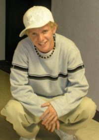

|  |
AMMON Fall 2004 Ammz is doing great in school. Still finding time to work on his music as well as all the homework and the paper route to earn a bit of cash. He loves to spend his extra time with Kevin doing whatever. Usually they go to the dunes and do four wheelin'. It is definitely the thing to do. Want to know more about Ammon? CLICK HERE for his spotlight. |